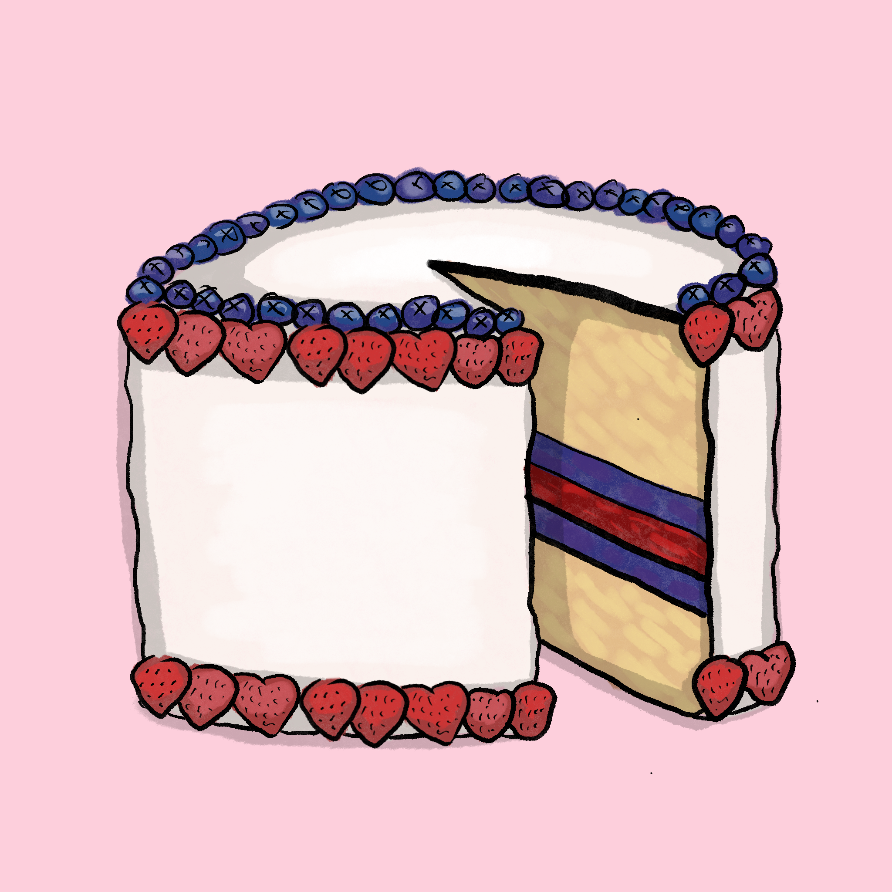

Apportionment Eats: Recipes Celebrating American Representation

Dive into a culinary journey that uniquely blends the flavors of American history and democratic principles. At Apportionment Eats, we believe that every slice, every bite, and every dish can be a tribute to the intricate art of congressional apportionment – a process that has shaped the foundation of American democracy.
Our curated collection of recipes is more than just a feast for the palate; it's an exploration of the diverse states that make up this great nation. Just as congressional apportionment ensures fair representation for each state, our recipes honor the cultural diversity and flavors that define the American experience.
Discover dishes inspired by the algorithmic balance of apportionment, where ingredients come together in harmony, just like states forging a common path. From appetizers to desserts, our recipes showcase the spirit of unity that defines the very essence of our nation.
As you savor each bite, take a moment to reflect on the journey of democracy – from the Constitutional Convention to the modern census – and how every state's contribution, much like every ingredient, adds to the rich tapestry of America.
So whether you're a history enthusiast, a food lover, or simply someone looking to explore the fusion of taste and tradition, join us on this culinary voyage that celebrates American congressional apportionment, one delectable recipe at a time.
Algorithmic Delight Dessert
The Algorithmic Delight Dessert is a delicious and creative treat inspired by the method of apportionment used to appoint representatives for states in the USA. Just as the method allocates seats in a fair and balanced manner, this dessert combines different elements in perfect harmony. With layers representing states and a sweet, creamy filling symbolizing unity, this dessert is a delightful representation of mathematical balance and culinary satisfaction.
Ingredients:
- For the Base:
- 1 cup crushed graham crackers (representing the foundation of the USA)
- 1/4 cup melted butter (symbolizing the binding factor)
- For the State Layers:
- 3 cups assorted fruits (such as strawberries, blueberries, and raspberries), diced
- 1/4 cup sugar (for sweetness and balance)
- 1 tablespoon lemon juice (to represent the zesty decision-making)
- For the Unity Filling:
- 8 oz cream cheese (representing unity)
- 1/2 cup powdered sugar (for sweetness)
- 1 teaspoon vanilla extract (symbolizing harmony)
- 1 cup heavy whipping cream (for the smooth blend of states)
- Prepare the Base:
- In a bowl, mix the crushed graham crackers and melted butter until the mixture resembles wet sand.
- Press the mixture firmly into the bottom of a serving dish or individual dessert cups to create a solid base. Place it in the refrigerator to set while you prepare the other layers.
- Create the State Layers:
- In a saucepan, combine the diced fruits, sugar, and lemon juice. Cook over medium heat until the fruits soften and release their juices, forming a sweet compote.
- Allow the compote to cool slightly before layering it over the graham cracker base. Spread it evenly to represent the diverse states in the USA.
- Whip up the Unity Filling:
- In a mixing bowl, beat the cream cheese until smooth and creamy. Add powdered sugar and vanilla extract, and continue to mix until well combined.
- In a separate bowl, whip the heavy whipping cream until soft peaks form.
- Gently fold the whipped cream into the cream cheese mixture to create a luscious, unified filling that embodies the harmonious cooperation of the states.
- Assemble the Algorithmic Delight:
- Carefully spread the unity filling over the fruit layer, ensuring an even distribution. This layer represents the algorithmic balance achieved through apportionment.
- Place the dessert back in the refrigerator and allow it to chill for at least 2-3 hours, or until the layers set and the flavors meld together.
- Serve and Enjoy
- Once set, remove the dessert from the refrigerator.
- You can garnish the top with a sprinkle of crushed graham crackers or some fresh fruit to represent the final touch of representation.
- Scoop out portions and serve this Algorithmic Delight Dessert to celebrate the mathematical ingenuity and delicious taste it brings to your table.
This dessert not only tantalizes your taste buds but also serves as a conversation starter about the intricate methods behind political representation. Enjoy your Algorithmic Delight Dessert with friends and family while discussing the delicate art of apportionment!
Equal Proportions Pie
Celebrate the spirit of fair representation with this delicious Equal Proportions Pie. Just as congressional apportionment ensures every state's voice is heard, this pie brings together an assortment of flavors in perfect harmony.
Ingredients:
- 2 cups mixed berries (blueberries, strawberries, raspberries)
- 1/4 cup granulated sugar
- 1 tablespoon lemon juice
- 1 pre-made pie crust (homemade or store-bought)
- 1 cup whipped cream (for serving)
Instructions:
- Preheat your oven to 375°F (190°C).
- In a bowl, combine the mixed berries, granulated sugar, and lemon juice. Toss gently to coat the berries in sweetness and balance.
- Roll out the pre-made pie crust and carefully place it into a pie dish, ensuring it covers the entire bottom.
- Spread the berry mixture evenly over the pie crust, representing the diverse states.
- Cover the pie with a second layer of pie crust, either as a full crust or a lattice pattern, symbolizing the unity achieved through equal proportions.
- Trim any excess pie crust and crimp the edges to seal the pie.
- Make a few small cuts in the top crust to allow steam to escape during baking, resembling the open exchange of ideas.
- Bake the pie in the preheated oven for 40-45 minutes, or until the crust is golden brown and the berry filling is bubbling.
- Remove the pie from the oven and let it cool slightly before serving.
- Slice and serve the Equal Proportions Pie with a dollop of whipped cream, embodying the harmony of flavors and representation.
Enjoy:
Indulge in this Equal Proportions Pie as a delicious reminder of the democratic ideals that shape our nation. With each bite, savor the balance, unity, and diversity that make America truly exceptional.